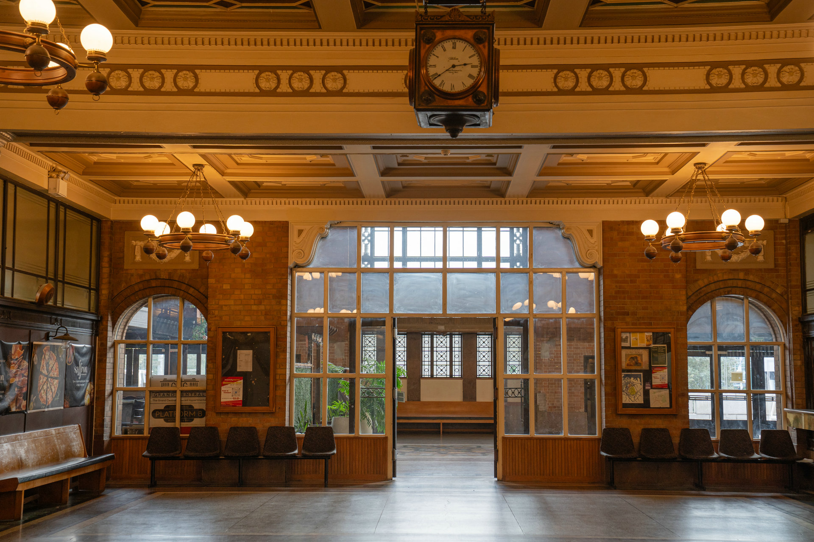

01 · Exhibitions
Contemporary work in a historic setting
Visual art and cultural exhibitions occupy the station's generous public rooms, placing new ideas in conversation with the building's architectural character.
Auckland Heritage Art Centre
Exhibitions, cultural programmes, photography, film and creative work inside an Auckland landmark
A living arts centre
The Auckland Heritage Art Centre brings exhibitions, cultural programmes and independent creative work into the former Auckland Railway Station.
Artists, photographers and filmmakers work among the building's original steelwork, tiled walls and changing natural light, giving the landmark an active cultural life rather than treating it only as a backdrop.
At the station
01 · Exhibitions
Visual art and cultural exhibitions occupy the station's generous public rooms, placing new ideas in conversation with the building's architectural character.

02 · Photography
Monumental rooms, warm light and preserved details give photographers a setting with atmosphere, scale and a strong sense of place.

03 · Film & projects
Film, installations, workshops and creative productions can take shape across rooms with very different scales and moods.
Hire the station for a creative projectFilm, fashion & photography
The station has long attracted people who see possibility in its monumental rooms, shifting light and preserved architectural detail.
On screen · 1982
Nagisa Ōshima's Merry Christmas, Mr. Lawrence filmed inside the former Auckland Railway Station. The building's interiors became wartime Batavia for the tribunal and imagined-execution sequences, placing the station within an enduring work of international cinema.
Editorial photography
Fashion and portrait photographers use the Grand Hall and Booking Hall to create images with the atmosphere of another era—warm light, deep shadows, brick arches and cinematic scale.

The place behind the programme
Opened in 1930, the former Auckland Railway Station carries the memory of generations of arrivals and departures. Its architecture and changing uses give today's cultural work a setting unlike any purpose-built gallery.
Read the station storyWhat's on
Programme listings are not yet published on this website. For current exhibitions, visiting information or an opportunity to present your work, contact the Auckland Heritage Art Centre team directly.